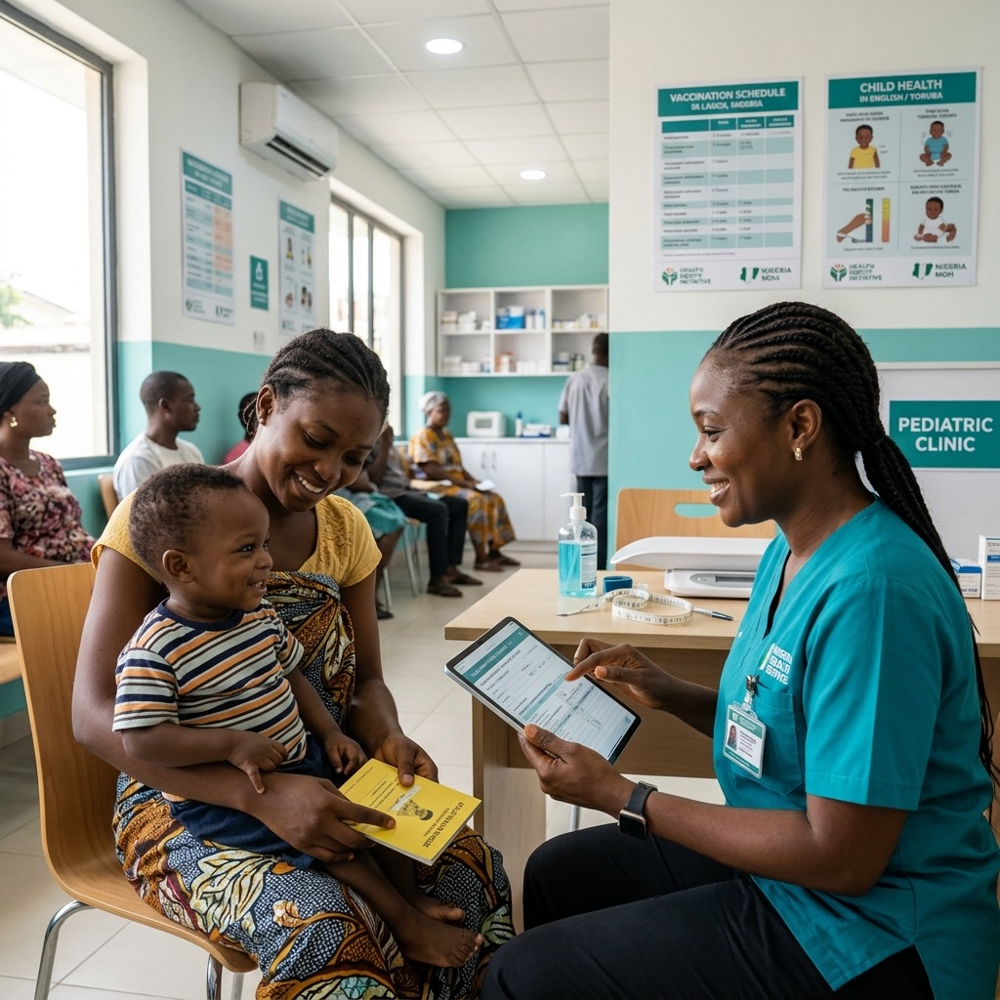

Child Health
Access · Equity · Outcomes
I’m Angel Mebuge — I work at the intersection of data, healthcare, and digital innovation, with a particular interest in child health. With a background in Anatomy and Public Health, I use data, research, and technology to understand healthcare challenges and explore practical solutions that can improve health outcomes and access to care.


Data should illuminate not just what is happening in health, but who it is happening to.
Angel Mebuge · Digital Health & Data Analytics
Excel · Power BI · Data Analysis · Data Visualization · Data Cleaning — applied to health datasets to surface meaningful insights.
Researching access to care and health equity for children, with a focus on understanding how technology can be applied thoughtfully to real healthcare challenges.
Digital Health · Health Research · Health Innovation · Responsible AI — exploring practical solutions that respond to the realities of the people they are designed to serve.
Team Leadership · Project Coordination · Communication · Problem Solving — bringing people and evidence together to move things forward.

I have a background in Anatomy and Public Health, with interests spanning data analytics, digital health research, and healthcare innovation. My interest in child health has shaped much of the work I pursue, particularly questions around access to care, health equity, and how technology can be applied thoughtfully to real healthcare challenges.
I’m particularly interested in the responsible use of technology in healthcare — where digital tools complement human expertise and respond to the realities of the people and communities they are designed to serve.
Read more about me →Every project, programme, and piece of research below connects back to the same concern: how do we use data and technology to make health systems work better for the people who need them most?

Health Equity / Nigeria
Public Health / Data

Health Systems / Child Health

Power BI / Visualisation

Cohort 4 · 2026

Data Cleaning / Analysis
Reinventing Healthcare in Africa / 2026
Cohort 3 · 2026
Ethics / AI & Society

Africa Responsible Digital Health Week / 2026

Advocacy / Community Leadership

HP Certification · 2026
I have a background in Anatomy and Public Health, with interests spanning data analytics, digital health research, and healthcare innovation. My interest in child health has shaped much of the work I pursue — particularly questions around access to care, health equity, and how technology can be applied thoughtfully to real healthcare challenges.
I’m interested in using data and research to understand health problems, communicate insights, and explore practical digital solutions. My work includes health data analysis, data visualization, and digital health projects focused on child health and improving access to appropriate care.
I’m particularly interested in the responsible use of technology in healthcare — where digital tools complement human expertise and respond to the realities of the people and communities they are designed to serve.

Data Analytics: Excel · Power BI · Data Analysis · Data Visualization · Data Cleaning
Digital Health & Research: Digital Health · Health Research · Health Innovation · Responsible AI
Professional & Leadership: Team Leadership · Project Coordination · Communication · Problem Solving
Let’s work together →Reinventing Healthcare in Africa Initiative — a fellowship programme exploring health technology innovation across the African continent.
Technovate · Certificate of Completion
Africa Responsible Digital Health Week 2026 — recognised for leadership and advocacy in responsible digital health across Nigeria.
Africa Responsible Digital Health Week · Certificate of Recognition
Digital Health & Health Innovation programme focused on early-career development in health technology.
HealthTech Accelerator · Certification pending
Covering the ethical dimensions of artificial intelligence, leadership in the digital age, and frameworks for responsible AI deployment in professional settings.
HP · Professional Certification
Data Analytics & Health Data programme applying analytical skills to real-world health datasets and public health challenges.
Data for Impact · Certification pending
Intensive training in Microsoft Excel for data analysis, covering advanced functions, data cleaning, and visualisation techniques applied to health data.
The Klarity Lab · Certificate of Completion
Whether you’re working on a digital health project, looking for a research collaborator, hiring for an internship, or just want to talk about child health data — I’d genuinely love to hear from you. I reply to every message personally.
Nigeria
Open to global opportunities, remote collaboration, fellowships, and internships.
Internships, fellowships, research collaborations, data analytics projects, and early-career opportunities in digital health — particularly those focused on child health or African health systems.
Currently available for project work, research partnerships, and opportunities at the intersection of data, child health, and digital innovation.